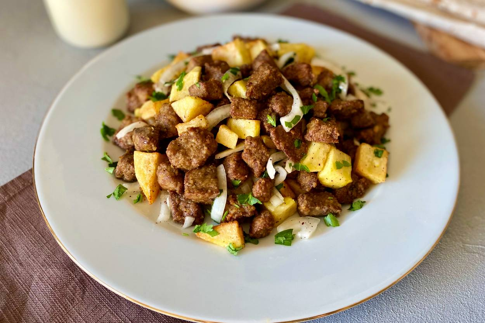

Arnavut ciğeri (lit. Albanian-style liver) is a Turkish dish that is extremely easy to prepare. It consists of fried lamb liver and onions. The dish is typically seasoned with sumac, paprika, and black pepper. It is believed that arnavut ciğeri was invented during the time when the Ottomans ruled Albania, hence the name.
Meal prep time : 20 minutes
Servings : 4